Tema 3: Traducció de programes
A EC, les traduccions des de C a codi d’assemblador han de ser el més literal possible, si no s’indica explícitament el contrari. Per tant, sense optimitzacions.
3.1 Desplaçaments de bits
3.1.1 Desplaçaments lògics
Les instruccions sll i srl desplacen el contingut del registre rs1 a l’esquerra o a la dreta el nombre de posicions especificat als 5 bits de menor pes del registre rs2, omplint les posicions vacants amb 0s. Les variants slli i srli fan la mateixa operació però el nombre de posicions es codifica directament com un immediat de 5 bits (shamt, shift amount)1. En tots els casos, el nombre de posicions s’interpreta com un natural.
| Mnemònic | Operands | Operació | Nom | Tipus |
|---|---|---|---|---|
sll |
rd, rs1, rs2 |
\(rd \leftarrow rs1 \,<<\, rs2[4:0]\) | shift left logical | R |
slli |
rd, rs1, shamt |
\(rd \leftarrow rs1 \,<<\, shamt\) | shift left logical | I |
srl |
rd, rs1, rs2 |
\(rd \leftarrow rs1 \,>>\, rs2[4:0]\) | shift right logical | R |
srli |
rd, rs1, shamt |
\(rd \leftarrow rs1 \,>>\, shamt\) | shift right logical | I |
Les posicions vacants s’omplen amb 0.
Donada la representació en Ca2 d’un enter \(x_s\), guardada a t2,
Pregunta: Com s’obté la seva representació en Ca1 (Secció 1.5.4) i s’assigna a t1?
Solució:
Les dues fórmules que relacionen el valor explícit \(x_u\) amb l’enter representat \(x_s\) (Secció 1.5) són:
- Ca2: \(x_s = x_u - X_{n-1} \cdot 2^n\)
- Ca1: \(x_s = x_u' - X_{n-1} \cdot (2^n - 1)\)
on \(X_{n-1}\) és el bit de signe (el mateix en els dos casos).
Igualant les dues expressions i simplificant:
\[x_u' = x_u - X_{n-1}\]
És a dir: la representació en Ca1 s’obté restant el bit de signe a la representació en Ca2. Per extreure el bit de signe de t2 i fer-ne la resta:
RV32I
Anàlisi
- Si \(x_s \geq 0\): el bit de signe és
0, de manera quet0 = 0it1 = t2. La representació no canvia, cosa que té sentit perquè els positius es codifiquen igual en Ca1 i Ca2. - Si \(x_s < 0\): el bit de signe és
1, de manera quet0 = 1it1 = t2 - 1. Efectivament, la representació en Ca1 d’un negatiu és sempre 1 menys que la representació en Ca2 del mateix enter (Secció 1.5).
Exemple: \(x_s = -51\), representat en Ca2 amb 8 bits com 1100 1101\(_2\) (= 0xCD) i en Ca1 com 1100 1100\(_2\) (= 0xCC). Fent les extensions a 32 bits, t2 = 0xFFFFFFCD i t1 = 0xFFFFFFCC.
srli t0, t2, 31→t0 = 1(bit de signe)sub t1, t2, t0→t1 = 0xFFFFFFCD - 1 = 0xFFFFFFCC
3.1.2 Desplaçament aritmètic a la dreta
La instrucció sra desplaça el contingut de rs1 a la dreta el nombre de posicions indicat, però en lloc d’omplir les posicions vacants amb zeros, les omple amb una còpia del bit de signe de rs1. Igual que srl, admet tant la variant d’immediat com la de registre.
A la taula següent s’usa \(>>>\) per denotar el desplaçament aritmètic a la dreta (amb extensió de signe), seguint la notació de Harris & Harris. Aquesta notació no coincideix amb la de l’operador >> de C usat més avall (Secció 3.1.3), on lògic i aritmètic es distingeixen pel tipus de l’operand (unsigned o amb signe) en lloc d’un símbol diferent. Són dues convencions vàlides, cadascuna pròpia del context on apareix (taula ISA vs. traducció d’operadors C): cal no barrejar-les.
| Mnemònic | Operands | Operació | Nom | Tipus |
|---|---|---|---|---|
sra |
rd, rs1, rs2 |
\(rd \leftarrow rs1 \,>>> rs2[4:0]\) | shift right arithmetic (register) | R |
srai |
rd, rs1, shamt |
\(rd \leftarrow rs1 \,>>> shamt\) | shift right arithmetic (immediate) | I |
Les posicions vacants s’omplen amb una còpia del bit de signe.
No existeix la instrucció slaslai
3.1.3 Traducció dels operadors C << i >>
L’operador << de C (desplaçament a l’esquerra) es tradueix sempre amb sll/slli. L’operador >> es tradueix amb srl/srli si l’operand és de tipus unsigned (natural), o amb sra/srai si és un enter amb signe.
3.1.4 Aplicació d’sll/slli: multiplicació per potències de 2
Desplaçar a l’esquerra un enter o natural amb sll/slli equival a multiplicar-lo per una potència de 2: rd ← rs1 × 2shamt.
A EC, s’usa slli per calcular l’offset en bytes per accedir a elements d’un vector quan la mida de l’element és una potència de 2 (Equació 2.1).
3.1.5 Aplicació d’sll/slli: divisió entera per potències de 2
Desplaçar a la dreta naturals amb srl/srli o enters (amb signe) sra/srai equival a dividir-los per una potència de 2: rd ← rs1 / 2shamt.
La semàntica de l’operador / de C requereix que el residu tingui el mateix signe que el dividend. En canvi, sra/srai produeix sempre un residu no negatiu. Per tant, sra/srai no és equivalent a / quan el dividend és negatiu.
Per exemple, la divisió entera (-15 / 4) dona quocient -3 i residu -3, mentre que el desplaçament -15 >> 2 dona quocient -4 i residu 1. Només cal usar sra/srai per traduir / si es pot garantir que el dividend no és negatiu.
3.2 Operacions lògiques bit a bit
3.2.1 Instruccions &, |, ^ (AND, OR, XOR)
Les instruccions bit a bit &, | i ^ de C es tradueixen amb and, or i xor. Cadascuna té també una variant amb immediat (andi, ori, xori), on l’immediat de 12 bits s’estén a 32 bits amb extensió de signe, igual que la resta d’instruccions de tipus I.
Els immediats de andi, ori i xori s’interpreten en complement a 2: si el bit 11 de l’immediat val 1, el valor estès a 32 bits té els bits 31..12 a 1. Això pot produir màscares no desitjades. Per exemple:
Per a màscares arbitràries de 32 bits, cal carregar la màscara en un registre amb li i usar and/or/xor.
| Mnemònic | Operands | Operació | Nom | Tipus |
|---|---|---|---|---|
and |
rd, rs1, rs2 |
\(rd \leftarrow rs1 \text{ and } rs2\) | and | R |
andi |
rd, rs1, imm12 |
\(rd \leftarrow rs1 \text{ and } SignExt(imm12)\) | and immediate | I |
or |
rd, rs1, rs2 |
\(rd \leftarrow rs1 \text{ or } rs2\) | or | R |
ori |
rd, rs1, imm12 |
\(rd \leftarrow rs1 \text{ or } SignExt(imm12)\) | or immediate | I |
xor |
rd, rs1, rs2 |
\(rd \leftarrow rs1 \text{ xor } rs2\) | exclusive or | R |
xori |
rd, rs1, imm12 |
\(rd \leftarrow rs1 \text{ xor } SignExt(imm12)\) | exclusive or immediate | I |
not
RV32I no inclou la instrucció not. La negació bit a bit (NOT) d’un registre, equivalent al ~ de C, s’obté amb la pseudoinstrucció not:
| Pseudoinstrucció | Operació | Expansió |
|---|---|---|
not rd, rs |
\(rd \leftarrow \sim rs\) | xori rd, rs, -1 |
xori rd, rs, -1 funciona perquè -1 en Ca2 és 0xFFFFFFFF, i fer XOR amb tots uns complementa tots els bits.
3.2.2 Aplicació d’and: selecció de bits (màscara)
La instrucció and s’usa per seleccionar determinats bits d’un registre posant a zero la resta. La tècnica consisteix a construir una màscara on els bits que es volen conservar valen 1 i la resta valen 0.
and
3.2.3 Aplicació d’or: posar bits a 1
La instrucció or s’usa per posar a \(1\) aquells bits d’un registre que valen 1 a la màscara.
3.2.4 Aplicació d’xor: complementar bits
La instrucció xor s’usa per complementar aquells bits d’un registre que valen 1 a la màscara.
3.3 Comparacions i operacions booleanes
En C, les expressions enters admeten els operadors de comparació ==, !=, <, <=, >, >=. A diferència d’altres llenguatges, en C no existeix el tipus booleà: el resultat d’una comparació és un enter, 1 si la comparació és certa i 0 si és altrament. Les comparacions seran amb signe o sense signe segons el tipus declarat dels operands.
En C existeixen també operadors booleans (&&, ||, !). Cada operand s’interpreta com a fals si val 0, o com a cert si val diferent de 0. El resultat és també un enter normalitzat: 1 si cert, 0 si fals.
En C, unes expressions no nul·les s’interpreten com a certes sense ser iguals. Tant les comparacions com els operadors booleans sempre donen com a resultat un enter normalitzat, 0 o 1. Per exemple, si y = 2 i z = 0, la sentència x = (y >= z) + 5; assigna a x el valor 6.
3.3.1 Instruccions de comparació: slt i sltu
La instrucció slt compara dos enters amb signe i posa a 1 (LSB a 1 i la resta a 0) al registre destinació si el primer és menor que el segon, o 0 en cas contrari. La instrucció sltu fa la mateixa operació però tractant els operands com a naturals. Les variants immediates slti i sltiu comparen amb un immediat de 12 bits amb extensió de signe.
| Mnemònic | Operands | Operació | Nom | Tipus |
|---|---|---|---|---|
slt |
rd, rs1, rs2 |
\(rd \leftarrow (rs1 < rs2) \,?\, 1 : 0 \quad (\mathbb{Z})\) | set less than | R |
sltu |
rd, rs1, rs2 |
\(rd \leftarrow (rs1 < rs2) \,?\, 1 : 0 \quad (\mathbb{N})\) | set less than unsigned | R |
slti |
rd, rs1, imm12 |
\(rd \leftarrow (rs1 < SignExt(imm12)) \,?\, 1 : 0 \quad (\mathbb{Z})\) | set less than immediate | I |
sltiu |
rd, rs1, imm12 |
\(rd \leftarrow (rs1 < SignExt(imm12)) \,?\, 1 : 0 \quad (\mathbb{N})\) | set less than immediate unsigned | I |
Per a les comparacions freqüents amb zero, RISC-V també defineix pseudoinstruccions de salt condicional específiques (beqz, bnez, bltz, bgez, bgtz, blez), que es presenten amb la resta de pseudoinstruccions de salt a RISC-V 3.9.
3.3.2 Traducció de == i !=
== i !=
Si t0, t1 i t2 són enters amb signe:
Comparació amb zero:
- Atenció: És vàlid per a
t0 == 0perquè comparart0com a natural amb1dona1si i només sit0 == 0(ja que0és l’únic natural estrictament menor que1).
Comparació entre dos registres:
3.3.3 Traducció de la negació booleana !
La negació booleana no es pot traduir amb xori rd, rs, -1 (NOT bit a bit), ja que aquest sempre dona un resultat diferent de zero tant si l’operand val 0 com 1. La traducció correcta és convertir-la en una comparació amb zero:
!
3.3.4 Traducció de <, >, <=, >=
<, >, <=, >=
Si t0, t1 i t2 són enters amb signe:
- Atenció: Per a operands de tipus
unsigned, cal substituirsltpersltua totes les traduccions d’aquest exemple.
3.3.5 Traducció de && i ||: Avaluació lazy
En C, els operadors lògics && i || s’avaluen d’esquerra a dreta de forma gandula (lazy): si el valor del primer operand ja determina el resultat de tota la condició, el segon operand no s’avalua. Això succeeix si el primer operand d’una && és fals, o si el primer operand d’una || és cert. La seva traducció implica l’ús d’instruccions de salt i s’estudia a la secció de sentències alternatives (Secció 3.6).
En C, l’avaluació lazy de && i || no és opcional, sinó que és una condició obligatòria imposada per la semàntica del llenguatge.
A EC, la traducció de && i || ha de respectar l’avaluació lazy.
3.4 Salts
Les instruccions de salt modifiquen el flux d’execució desviant-lo a una adreça diferent de la instrucció següent. A RV32I es distingeixen dos eixos de classificació:
- Condicional vs. incondicional: els salts condicionals (
beq,bne, etc.) salten només si es compleix una condició; els incondicionals (jal,jalr) salten sempre. - Relatiu al PC vs. indirecte: els salts relatius al PC calculen l’adreça de destinació sumant un offset al valor actual del PC; els salts indirectes la calculen a partir d’un registre base (mode base + desplaçament, com
jalr).
La combinació d’aquests dos eixos dona lloc a tres categories:
| Relatiu al PC | Indirecte | |
|---|---|---|
| Condicional | beq, bne, blt, bge, bltu, bgeu |
— |
| Incondicional | jal, j |
jalr, jr, ret |
3.4.1 Salts condicionals
Els salts condicionals salten a l’adreça especificada per l’etiqueta si es compleix la condició, o continuen a la instrucció següent si no es compleix. En el llenguatge màquina no es codifica l’adreça absoluta de destinació, sinó un desplaçament relatiu al PC. L’assemblador calcula automàticament aquest offset a partir de l’etiqueta.
Les instruccions de salt condicional són de format Tipus-B (RISC-V 3.6), variant del format Tipus-S ja presentat a Tema 2 (RISC-V 2.25). El desplaçament codificat és de 13 bits amb signe, però el bit 0 és sempre implícit (val 0) perquè les destinacions de salt estan alineades a, com a mínim, 2 bytes. D’aquesta manera, la instrucció emmagatzema 12 bits i obté un rang efectiu de ±4 KiB (Essencial 2.5) respecte al PC. A RV32I base (cas d’EC), les instruccions estan alineades a 4 bytes; el format B manté la granularitat de 2 bytes per compatibilitat amb l’extensió C (Compressed).
Els bits de l’immediat estan repartits en dos camps no contigus (imm[12|10:5] a [31:25] i imm[4:1|11] a [11:7]) per mantenir rs1 i rs2 en les mateixes posicions que en els formats R i S, cosa que simplifica la descodificació al maquinari.
A RV32I, tots els salts condicionals són relatius al PC. No existeix cap salt condicional indirecte.
| Mnemònic | Operands | Operació | Nom | Tipus |
|---|---|---|---|---|
beq |
rs1, rs2, label |
\(rs1 == rs2 \,?\, PC \leftarrow PC + SignExt(offset13)\) | branch equal | B |
bne |
rs1, rs2, label |
\(rs1 != rs2 \,?\, PC \leftarrow PC + SignExt(offset13)\) | branch not equal | B |
blt |
rs1, rs2, label |
\(rs1 < rs2 \,?\, PC \leftarrow PC + SignExt(offset13) \quad (\mathbb{Z})\) | branch less than | B |
bge |
rs1, rs2, label |
\(rs1 >= rs2 \,?\, PC \leftarrow PC + SignExt(offset13) \quad (\mathbb{Z})\) | branch greater than or equal | B |
bltu |
rs1, rs2, label |
\(rs1 < rs2 \,?\, PC \leftarrow PC + SignExt(offset13) \quad (\mathbb{N})\) | branch less than unsigned | B |
bgeu |
rs1, rs2, label |
\(rs1 >= rs2 \,?\, PC \leftarrow PC + SignExt(offset13) \quad (\mathbb{N})\) | branch greater than or equal unsigned | B |
| Pseudoinstrucció | Expansió |
|---|---|
bgt rs1, rs2, label |
blt rs2, rs1, label |
ble rs1, rs2, label |
bge rs2, rs1, label |
bgtu rs1, rs2, label |
bltu rs2, rs1, label |
bleu rs1, rs2, label |
bgeu rs2, rs1, label |
| Pseudoinstrucció | Expansió | Condició |
|---|---|---|
beqz rs, label |
beq rs, zero, label |
salta si rs == 0 |
bnez rs, label |
bne rs, zero, label |
salta si rs != 0 |
bltz rs, label |
blt rs, zero, label |
salta si rs < 0 |
bgez rs, label |
bge rs, zero, label |
salta si rs ≥ 0 |
bgtz rs, label |
blt zero, rs, label |
salta si rs > 0 |
blez rs, label |
bge zero, rs, label |
salta si rs ≤ 0 |
Sigui el programa següent i el seu memory dump:
RV32I
| Adreça | Codi | Bàsic | Font |
|---|---|---|---|
0x00400000 |
0x00000663 |
beq x0, x0, 0x0000000c |
beq zero, zero, etiqueta |
0x00400004 |
0x00000013 |
addi x0, x0, 0 |
nop |
0x00400008 |
0x00000013 |
addi x0, x0, 0 |
nop |
0x0040000C |
0x40000033 |
sub x0, x0, x0 |
sub zero, zero, zero |
L’assemblador ha calculat l’offset com:
\[\text{offset} = @\text{etiqueta} - @\text{beq} = \texttt{0x0040000C} - \texttt{0x00400000} = 12 = \texttt{0x0000000C}\]
Aquest valor apareix directament al panell Basic de RARS com 0x0000000c, confirmat per la codificació binària de la instrucció: 0x00000663.
Per què 0x0040000C i no 0x00400008?
L’offset es calcula respecte a l’adreça de la instrucció de salt (0x00400000), no respecte a la instrucció següent. L’adreça de etiqueta és 0x0040000C perquè hi ha 3 instruccions de 4 bytes entre beq i etiqueta (beq + dues nop).
bne
Execució si la variable b té actius els bits 0 i 4, i inactius els bits 2 i 6:
C
Suposant que a i b ocupen els registres t0 i t1:
Les instruccions de salt condicional són la base per implementar les sentències alternatives (Secció 3.6) i els bucles (Secció 3.7).
3.4.2 Salts incondicionals relatius al PC
La instrucció jal (jump and link) salta a una adreça especificada per una etiqueta, codificada com un desplaçament relatiu al PC, i guarda l’adreça de retorn (pc + 4) al registre rd. Quan rd = ra, s’usa per cridar subrutines (Secció 3.9). Si rd = zero, salta perdent l’adreça de retorn.
La instrucció jal és de format Tipus-J (RISC-V 3.10), variant del format Tipus-U (RISC-V 3.16), presentat més avall en aquest mateix tema a partir de la pseudoinstrucció la (i introduït a Tema 2 amb lui, RISC-V 2.12). Com en el format B (RISC-V 3.6), el bit 0 de l’immediat és implícit (val 0), de manera que la instrucció codifica 20 bits i obté un rang efectiu de ±1 MiB respecte al PC.
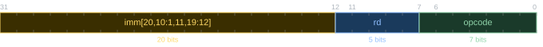
Com en el format B, els bits de l’immediat estan reordenats (imm[20|10:1|11|19:12] a [31:12]) per mantenir rd en la mateixa posició que en els formats R, I i U, cosa que simplifica la descodificació al maquinari.
| Mnemònic | Operands | Operació | Nom | Tipus |
|---|---|---|---|---|
jal |
rd, label |
\(rd \leftarrow PC + 4; PC \leftarrow PC + SignExt(offset21)\) | jump and link | J |
| Pseudoinstrucció | Expansió | Ús |
|---|---|---|
j label |
jal zero, label |
Salt incondicional relatiu al PC (±1 MiB) |
3.4.3 Salts incondicionals indirectes
La instrucció jalr (jump and link register) salta a l’adreça calculada sumant el registre rs1 i un immediat de 12 bits (mode base + desplaçament), i guarda l’adreça de retorn a rd. A diferència de jal, l’adreça de destinació no és relativa al PC sinó que depèn del contingut d’un registre — d’aquí el terme salt indirecte. S’usa principalment per retornar de subrutines i per saltar a adreces llunyanes desconegudes en temps de compilació.
| Mnemònic | Operands | Operació | Nom | Tipus |
|---|---|---|---|---|
jalr |
rd, rs1, imm12 |
\(PC \leftarrow rs1 + SignExt(imm12); rd \leftarrow PC_{ant} + 4\) | jump and link register | I |
| Pseudoinstrucció | Expansió | Ús |
|---|---|---|
jr rs |
jalr zero, rs, 0 |
Salt a l’adreça continguda a rs |
ret |
jalr zero, ra, 0 |
Retorn de subrutina |
jr
La pseudoinstrucció la carrega l’adreça de 32 bits d’una etiqueta en un registre (RISC-V 3.17).
A EC, els salts tenen rols ben diferenciats: els salts relatius al PC (jal, j) s’usen per implementar estructures de control de flux local (if-then-else, bucles), mentre que els salts indirectes (jalr, jr, ret) s’usen quan la destinació està en un registre, com en retorns de subrutina, vectors de salts o salts a adreces carregades explícitament.
A RV32I, els salts incondicionals poden ser relatius al PC (jal, j) o indirectes (jalr, jr, ret).
3.5 Revisió dels modes d’adreçament
Ara que ja s’han presentat totes les instruccions de processament i control de flux de la base RV32I (RISC-V 2.2), tret de ecall (Secció 9.5) —les instruccions de sistema, com ecall i ebreak (presentada a Tema 9), queden fora d’aquesta classificació—, l’exercici de classificar-les segons el mode d’adreçament (EC 2.13) pot ajudar no només a interioritzar el repertori de la ISA, sinó també, a nivell més abstracte, a anar conceptualitzant el domini d’estructura de computadors com a disciplina i el rol que li pertoca dins del context maquinari-programari (Secció 1.1.1).
La classificació proposada inclou quatre decisions que cal justificar:
luis’ha classificat com a mode immediat perquè el seu únic operand font és un valor constant de 20 bits codificat directament a la instrucció; no hi ha cap registre base ni cap referència al PC.auipcs’ha classificat com a mode relatiu al PC perquè suma un immediat de 20 bits al valor actual del PC per construir adreces relatives a la posició actual del programa.jalrs’ha classificat com a mode base + desplaçament perquè calcula l’adreça de salt sumant un registre base (rs1) i un immediat de 12 bits, exactament com fan les instruccions de càrrega i emmagatzematge. L’única diferència és que el resultat s’usa com a adreça de salt en lloc d’adreça de memòria.ecallno s’ha inclòs perquè no és una instrucció de processament de dades, sinó una instrucció de control que invoca una crida al sistema (Secció 9.5).
| Mode | Instruccions |
|---|---|
| Registre | add, sub, and, or, xor, sll, srl, sra, slt, sltu |
| Immediat | addi, andi, ori, xori, slli, srli, srai, slti, sltiu, lui |
| Base + desplaçament | lw, lh, lb, lhu, lbu, sw, sh, sb, jalr |
| Relatiu al PC | beq, bne, blt, bge, bltu, bgeu, jal, auipc |
3.6 Sentències alternatives: if-then-else i switch
3.6.1 Sentència if-then-else
En C, la condició d’un if és una expressió entera qualsevol: el resultat s’avalua com a fals si val zero, o com a cert si val diferent de zero. El cas més freqüent és que la condició sigui una comparació o una operació booleana, però no és obligatori.
Sigui el cas general en C:
El patró de traducció a RV32I és:
RV32I
La clàusula else és opcional. Si no existeix, el primer salt va directament a fisi, que es col·loca just després de la traducció de sentencia_then.
3.6.2 Avaluació lazy als salts condicionals encadenats
L’avaluació lazy es tradueix naturalment amb salts condicionals encadenats.
if amb operador &&
Suposant que a, b, c, d ocupen t0, t1, t2, t3:
RV32I
Si el primer operand de && és fals (a < b), el salt a sino evita avaluar el segon operand.
if amb operador ||
Suposant que a, b, c, d ocupen t0, t1, t2, t3:
RV32I
Si el primer operand de || és cert (a >= b), el salt a llavors evita avaluar el segon operand.
3.6.3 Sentència switch
La sentència switch selecciona una d’entre múltiples clàusules case comparant el resultat d’una expressió entera amb constants. Si cap coincideix, s’executa la clàusula default si existeix.
C
El mètode més senzill de traducció és una cadena de if-then-else que comprova les etiquetes seqüencialment. Un mètode més eficient, quan les constants formen un rang dens, consisteix en un vector de salts (jump table): un vector de paraules on cada element conté l’adreça del codi d’una clàusula case, indexat pel resultat de l’expressió.
switch amb vector de salts
Suposant que t0 conté el resultat de l’expressió del switch i que switch_vec és un vector de paraules amb les adreces de cada clàusula:
RV32I
El vector de salts es declara a la secció .data:
RV32I
Aquesta versió simplificada assumeix que l’expressió del switch només pot valer 0–3 (rang cobert exactament pel vector) i que no hi ha clàusula default. El cas general —amb default i sense garantia que l’expressió cauria dins el rang— es tracta a continuació.
El vector de salts és eficient quan les constants del switch formen un rang dens (per exemple, 0, 1, 2, 3). Si les constants estan disperses o el seu rang és molt gran, és preferible la cadena de if-then-else, ja que el vector de salts requeriria moltes entrades per a constants que no existeixen.
Cal tenir en compte que si les constants no comencen a 0, cal restar el valor mínim al resultat de l’expressió abans d’indexar el vector. Per exemple, si les constants van de 5 a 8:
RV32I
Nota: El break al final de cada case s’ha de traduir amb un salt incondicional j a l’etiqueta que marca el final del switch. Si no hi ha break, l’execució continua (fall-through) al codi del case següent, sense necessitat de cap instrucció addicional.
3.7 Sentències iteratives: while, for i do-while
3.7.1 Sentència while
La sentència while executa zero o més iteracions mentre es compleixi la condició. La condició s’avalua abans de cada iteració, de manera que si inicialment és falsa no s’executa cap iteració.
Sintaxi:
El patró de traducció a RV32I és:
RV32I
En aquesta secció s’usa l’etiqueta bucle: tant per al while com per al for i el do-while per fer explícit que tots tres tipus de bucles tenen la mateixa estructura bàsica de control de flux, i per poder parlar d’optimitzacions de bucle de manera genèrica.
En la pràctica, s’usen etiquetes més descriptives (per exemple, while:, fiwhile:, for:, fifor:, do:) per facilitar la lectura i el manteniment del codi.
while
El patró anterior conté un salt incondicional j bucle al final de cada iteració. Es pot eliminar avaluant la condició al final del bucle en lloc de al principi. Però cal assegurar que es manté la semàntica del while: si la condició és inicialment falsa, no s’ha d’executar cap iteració. Per això cal una comprovació prèvia a l’entrada:
RV32I
El cos del bucle s’executa ara sense cap salt incondicional: el salt condicional al final torna al principi si la condició segueix sent certa, o en cas contrari cau a fibucle. Això estalvia un salt per iteració. Aquesta transformació es formalitza més endavant com a Optimització #2 (Secció 4.6 a Tema 4).
Si la condició és complexa i escriure-la dues vegades seria costós, es pot substituir la comprovació inicial per un salt incondicional a la instrucció d’avaluació al final del bucle:
3.7.2 Sentència for
Al bucle for, el més habitual és que sentència1 inicialitzi la variable de control del bucle (típicament un comptador) i que sentència2 l’actualitzi després de cada iteració.
Quan es fa així, el for agrupa tots els elements que controlen el bucle en una única capçalera, cosa que el fa més fàcil de llegir que el while equivalent:
for
Suposant que sum, i, N ocupen t0, t1, t2, i que v és un vector global d’enters:
3.7.3 Sentència do-while
La sentència do-while executa el cos sempre almenys una vegada, i la condició s’avalua al final de cada iteració.
El patró de traducció és més senzill que el del while perquè no cal comprovació inicial: el cos s’executa primer i el salt condicional al final decideix si tornar a iterar:
do-while: validació d’un valor dins d’un rang
Suposant que n, i ocupen t0, t1 i v és un vector global d’enters:
RV32I
El bucle avança per v fins a trobar el primer element no negatiu. La condició s’avalua després d’executar el cos, de manera que sempre es llegeix almenys un element.
Una variable d’inducció és una variable que s’incrementa o decrementa en una quantitat constant a cada iteració d’un bucle. El compilador pot eliminar-les substituint-les per l’aritmètica de punters directament. Aquesta transformació es formalitza més endavant com a Optimització #3 (Secció 4.6 a Tema 4).
Per exemple, en el for anterior, en lloc de calcular @v[i] = @v[0] + i*4 a cada iteració, pot mantenir directament un punter p que avanci de 4 en 4 bytes:
C
Suposant que sum, N, p i fi ocupen t0, t2, t3, t4:
RV32I
Aquesta optimització elimina la multiplicació i*4 dins el bucle i redueix el nombre d’instruccions per iteració. Els compiladors moderns l’apliquen automàticament.
3.8 Estructura de la memòria
Les dades (instruccions i variables) d’un programa poden tenir un mode d’emmagatzemament estàtic o dinàmic.
A l’emmagatzemament estàtic, l’espai de memòria reservat per cada objecte és el mateix durant tot el temps d’execució del programa. Les reserves es fan en temps de compilació i no es poden modificar en temps d’execució. Les instruccions, les variables globals i les constants simbòliques sempre s’emmagatzemen estàticament. Els segments de memòria estàtica principals són .text per a les instruccions del programa en assemblador i .data per a les variables globals i constants simbòliques, als quals s’escriu en temps de compilació mitjançant les directives de segment (RISC-V 2.9).
A l’emmagatzemament dinàmic la gestió de memòria (reserva i alliberament) es fa en temps d’execució. Els segments de memòria dinàmica principals són la pila (stack) i el heap. La pila s’usa per a les variables locals i els registres desats (Secció 3.9.4), mentre que el heap s’usa per a les variables dinàmiques, on la reserva i l’alliberament es fa explícitament per part del programador (mitjançant malloc() i free()).
C
int gvec[100]; /* global: emmagatzemament estàtic (.data) */
int *pvec; /* global: punter a dada dinàmica (heap) */
int f() {
int lvec[100]; /* local: emmagatzemament dinàmic (pila) */
...
pvec = malloc(400); /* reserva espai al heap */
...
pvec[10] = gvec[10] + lvec[10];
...
}
int g() {
...
free(pvec); /* allibera espai del heap */
...
}3.8.1 RARS — Mapa de memòria
RARS organitza l’espai d’adreces en les regions (segments, àrees, etc.) següents:
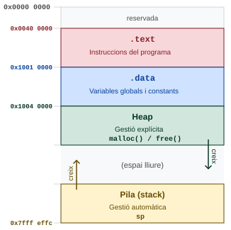
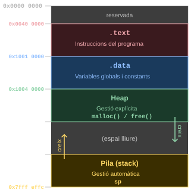
.text, .data, heap i pila, amb les adreces d’inici de cada segment.
| Regió | Tipus | Adreça d’inici | Contingut | Creix cap a … |
|---|---|---|---|---|
.text |
Estàtic | 0x00400000 |
Codi màquina (instruccions) | adreces altes |
.data |
Estàtic | 0x10010000 |
Variables globals | adreces altes |
| heap | Dinàmic | 0x10040000 |
Variables dinàmiques (malloc()/free()) |
adreces altes |
| Pila | Dinàmic | 0x7FFFFFFC |
Variables locals, registres desats | adreces baixes |
| kernel | Estàtic | 0x80000000 |
Codi i dades del sistema operatiu | adreces altes |
RARS: Settings → Memory Configuration… mostra totes les regions de memòria.
gp (global pointer)
L’ABI reserva el registre gp (x3, global pointer) per optimitzar l’accés a variables globals petites situades dins d’un rang de ±2 KiB respecte al valor de gp. El carregador l’inicialitza automàticament en arrencar el programa; el programador no l’ha de manipular mai directament. A EC no s’estudia aquest mecanisme.
3.8.2 Accés a variables globals
En RV32I, la pseudoinstrucció la s’expandeix en dues instruccions que carreguen l’adreça de 32 bits de la variable en un registre. Un cop carregada l’adreça, l’accés a la variable es fa amb una instrucció de lw/sw (o les variants de byte i de mitja paraula):
RV32I
Si s’accedeix diverses vegades a la mateixa variable dins una mateixa funció, és eficient carregar l’adreça una sola vegada en un registre i reutilitzar-la.
Les dues instruccions en què s’expandeix la pertanyen al format Tipus-U (RISC-V 3.16): lui (ja presentada a Tema 2, RISC-V 2.12) i auipc.
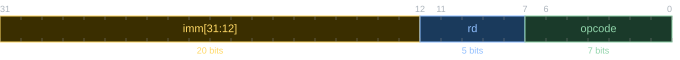
El camp imm[31:12] conté els 20 bits superiors de l’immediat; els 12 bits inferiors del resultat els determina la instrucció concreta (lui els posa a 0; auipc els suma via addi). És el format amb l’immediat més gran de tota la ISA, i no té camps rs1, rs2 ni funct.
la
La instrucció auipc (add upper immediate to PC) suma un immediat de 20 bits desplaçat als 12 bits superiors amb el valor actual del PC, i escriu el resultat al registre destinació. Això produeix una adreça relativa al PC, en lloc d’una adreça absoluta.
la s’expandeix en dues instruccions amb adreces relatives al PC:
RV32I
on offset = @label - PC és la distància entre l’etiqueta i la instrucció auipc, i hi_20 i lo_12 en són la part alta i baixa respectivament (amb l’ajust de signe habitual si lo_12[11] == 1).
Exemple: la t0, AA amb @AA = 0x10010000 i auipc al PC 0x00400000:
offset = 0x10010000 - 0x00400000 = 0x0fc10000hi_20 = 0x0fc10,lo_12 = 0x000auipc x5, 0x0fc10→x5 = 0x00400000 + 0x0fc10000 = 0x10010000addi x5, x5, 0→x5 = 0x10010000✓
La raó d’usar auipc en lloc de lui és que en un fitxer objecte reubicable les adreces absolutes no es coneixen fins que l’enllaçador combina tots els mòduls. Amb adreces relatives al PC, el codi és independent de la posició (position-independent): el desplaçament entre la instrucció i la dada és constant independentment d’on es carregui el programa en memòria, cosa que simplifica la reubicació (vegeu Secció 3.10).
3.9 Subrutines
Una subrutina és un subprograma que executa una tasca concreta, que pot admetre paràmetres d’entrada i retornar resultats. Pot ser invocada des de múltiples punts d’un programa sense haver de ser reescrita cada vegada. És la generalització del que en altres contextos s’anomena acció, funció (C), procediment, mètode, etc. Permet escriure programes estructurats aplicant conceptes com el disseny descendent, la reutilització de codi i la programació modular.
A diferència d’una subrutina, una macro no genera cap crida: l’assemblador insereix el codi a cada punt d’invocació, de manera que si s’invoca \(n\) vegades, el codi apareix \(n\) vegades a l’executable. Una subrutina, en canvi, és codi compartit que resideix en un únic lloc de memòria i s’executa per salt, amb el cost d’una crida i un retorn (Secció 2.3.5.3).
Per tal que una subrutina i el codi que la crida puguin ser programats en llenguatge d’assemblador (o compilats) independentment, cal que la subrutina declari amb precisió la seva interfície (nom, paràmetres, resultat i tipus respectius), i que tots dos s’ajustin a les regles de l’ABI, la qual, per a cada ISA i sistema operatiu, defineix les convencions que permeten compartir codi emmagatzemat en biblioteques.
Una subrutina és:
- Uninivell, si el seu codi no conté cap crida a una altra subrutina.
- Multinivell, si el seu codi conté alguna crida a una altra subrutina.
3.9.1 Crida i retorn (el registre ra)
Des del punt de vista del control del flux d’execució, quan es crida una subrutina cal guardar l’adreça de retorn, és a dir, l’adreça de la instrucció següent a l’execució de la subrutina. L’ABI de RV32I reserva el registre ra (return address, x1) per a aquest propòsit.
La instrucció jal ra, label (RISC-V 3.11) salta a l’adreça indicada per label (primera instrucció de la subrutina cridada) i guarda l’adreça de retorn (PC + 4) a ra. Per retornar, s’usa la pseudoinstrucció ret (RISC-V 3.14), que salta a l’adreça continguda a ra.
Un codi és:
- Caller, si fa una crida a una subrutina.
- Callee, si és la subrutina cridada.
Per analogia, és comú emprar els termes mare/pare i fill/a, per referir-se als codis caller i al callee respectivament. Quan hi ha tres nivells de crida, l’analogia s’expandeix a tres generacions, avi-pare-fill.
La columna «Qui el guarda (Saver)» de les taules de registres de la ISA i l’ABI (RISC-V 2.22) estableix si un registre és caller-saved o callee-saved.
- Caller-saved: És el caller qui ha de preservar-lo si vol recuperar el seu valor després de la crida.
- Callee-saved: És el callee qui ha de preservar-lo si vol usar-lo i, per tant, ha de restaurar-lo abans de retornar.
El registre ra és caller-saved, ja que la instrucció que el pare empra per fer la crida (jal, RISC-V 3.11) escriu a ra l’adreça de retorn que el fill utilitzarà per retornar-li el control de flux. Aquesta escriptura implica la pèrdua per sobreescriptura de l’adreça de retorn que ell, el pare, ha d’utilitzar per tornar el control de flux a l’avi.
3.9.2 Pas de paràmetres i retorn de resultats (els registres a0–a7)
El pas de paràmetres i el retorn de resultats implica una comunicació entre el codi que invoca la subrutina i la subrutina cridada. En assemblador aquesta comunicació es fa dipositant paràmetres i resultats en llocs determinats per l’ABI.
- Els paràmetres de tipus escalar (inclosos els punters) es passen pels registres
a0–a7, en ordre d’aparició, d’esquerra a dreta. - Els resultats es retornen pels registres
a0ia1(com a màxim dos resultats escalars). El segon registrea1s’usa habitualment per retornar un codi d’error o un segon valor de retorn. - Si un paràmetre o resultat té menys de 32 bits (
charoshort), cal estendre’l a 32 bits, dins el registre assignat, fent extensió de signe o de zeros segons hagi estat declaratsignedounsigned.
A EC, els modes de pas de paràmetres són:
- Pas per valor: La funció rep una còpia del paràmetre. Qualsevol modificació que faci la funció afecta només la còpia, no l’original.
- Pas per referència: La funció rep una referència a la dada original, és a dir, la seva adreça en memòria. Les modificacions que faci la funció afecten directament la dada original.
Cal distingir el mecanisme físic de pas del paràmetre (com es transmet la dada) de la semàntica (què representa la dada transmesa):
| Mecanisme | Semàntica | Exemple a RV32I |
|---|---|---|
Registre (a0–a7) |
Valor | Paràmetre escalar (int, char) |
Registre (a0–a7) |
Referència | Paràmetre punter (int *) |
| Pila | Valor | Escalar que no cap en registre |
En C, el mecanisme és sempre per registre o pila, però la semàntica depèn del tipus: un escalar és pas per valor, un punter és pas per referència.
En C només existeix el pas per valor. Per tant la funció cridada rep una còpia dels paràmetres i, per tant, les modificacions que hi faci no afectaran els valors de les dades originals.
Per aconseguir un efecte equivalent al pas per referència, el que es passa com a paràmetre és un punter a la dada original (per tant, aquesta ha d’estar en memòria). D’aquesta manera, les modificacions que faci la funció afectaran directament la dada original.
printf() i scanf()
Les funcions printf (formatat —%d per enters— i impressió de dades) i scanf (lectura formatada de dades) de la biblioteca stdio.h il·lustren bé la diferència entre pas per valor i pas per referència en C:
C
Després de scanf, x pot tenir un valor diferent de 42. Després de printf, x segueix valent 42 — printf no pot modificar-lo perquè només n’ha rebut una còpia.
Les variables escalars (globals i locals) es poden passar per valor o per referència si es passa la seva adreça.
Els vectors i matrius només es poden passar per referència.
C
funcA és una subrutina multinivell: crida funcB i després continua executant-se fins al seu propi ret, de manera que haurà de preservar ra abans de la crida (Secció 3.9.4). S’omet aquí per centrar l’exemple en el pas de paràmetres.
RV32I
.data
x: .space 20 # vector de 10 shorts (20 bytes)
y: .half 0 # variable short (2 bytes)
z: .half 0 # variable short (2 bytes)
...
.text
...
funcA:
...
la a0, x # a0 <- @x (global)
la t2, y # t2 <- @y (global)
lh a1, 0(t2) # a1 <- M_h[@y] (amb extensió de signe)
mv a2, t0 # a2 <- k (local)
jal ra, funcB # crida a funcB
la t2, z # t2 <- @z (global)
sh a0, 0(t2) # M_h[@z] <- a0 (retorn de funcB)
...
ret
...
funcB:
slli a2, a2, 1 # offset = i * 2 (sizeof(short) = 2)
add a0, a0, a2 # @vec[i] = vec + offset
lh a0, 0(a0) # vec[i] (amb ext. de signe)
sub a0, a0, a1 # resultat = vec[i] - n
ret
...Donades les declaracions de variables i les capçaleres candidates següents (en C no existeix la sobrecàrrega; aquí es presenten com a declaracions alternatives per exercici de tipus):
C
Pregunta: A quina capçalera correspon cada crida?
C
Solució:
| Crida | Tipus del paràmetre real | Capçalera |
|---|---|---|
f?(V1) |
short * (nom de vector) |
int f3(short *pi) |
f?(p) |
int * |
int f5(int vi[]) |
f?(&V2[10]) |
char * (adreça d’element) |
int f4(char vc[]) |
f?(V2[10]) |
char (valor d’element) |
int f2(char c) |
f?(*p) |
int (desreferència) |
int f1(int i) |
Anàlisi:
- El nom d’un vector sense índex equival a un punter al primer element.
int vi[]com a paràmetre formal és equivalent aint *vi.&V2[10]és l’adreça de l’element 10 deV2: unchar *.V2[10]és el valor de l’element 10: unchar.*pdesreferenciapde tipusint *, donant unint.
3.9.3 Variables locals: el bloc d’activació (el registre sp)
sp
Per conveni —i com a criteri seguit a EC—, les subrutines reserven tot l’espai que necessitaran a l’inici de la seva execució i l’alliberen just abans de retornar el control de flux al caller. Aquest espai de memòria s’anomena bloc d’activació (BA, stack frame).
La reserva i l’alliberament d’espai de memòria per al BA es fa mitjançant el registre de pila sp (stack pointer, x2).
El BA creix cap a adreces més baixes.
Durant l’execució de la subrutina, l’sp apunta al primer byte del BA, el cim de pila.
Per fer la reserva d’espai, cal decrementar sp la mida del bloc i, per fer l’alliberament, restituir-lo al valor original incrementant-lo la mateixa quantitat.
A EC, la mida del bloc d’activació i el valor de sp han de ser sempre múltiples de 4 bytes.
L’ABI estàndard de RV32I exigeix múltiples de 16 bytes, però a EC s’adopta la relaxació a 4 per simplificar els exemples i exercicis.
Les variables locals s’assignen a registres o al BA seguint aquestes regles:
- Les variables escalars (enters, caràcters, punters) es guarden en registres. Només es guarden al BA si:
- no hi ha prou registres disponibles, o
- apareixen precedides de l’operador
&(adreça de), per poder tenir una adreça de memòria.
- Les variables estructurades (vectors, matrius, etc.) es guarden sempre al BA.
El BA pot incloure:
- Variables locals de tipus estructurat i les escalars que no caben en registres o que requereixen adreça.
- Registres segurs desats (vegeu Secció 3.9.4), si la subrutina és multinivell.
La disposició dins el BA, de les adreces més baixes a les més altes:
| Zona | Contingut |
|---|---|
| Primera (adreces baixes) | Variables locals, en ordre de declaració, alineades segons el seu tipus |
| Segona (adreces altes) | Registres segurs desats, alineats a múltiple de 4 |
| Tercera (adreces més altes) | ra, alineat a múltiple de 4, si la subrutina és multinivell. |
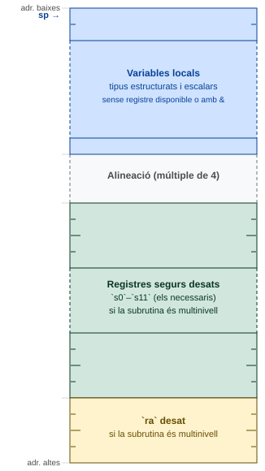
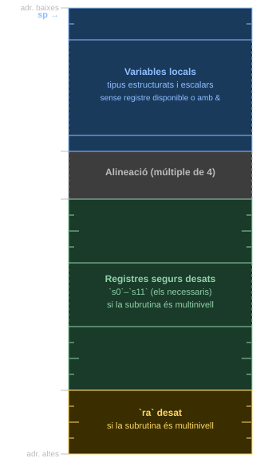
sp apunta al primer byte del bloc durant l’execució de la subrutina.
C
El bloc d’activació conté v (10 bytes) i w (40 bytes), en ordre textual, amb k en el registre t0. La mida total és 52 bytes (arrodonit a múltiple de 4).
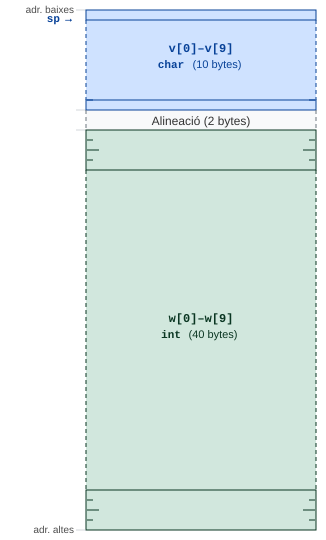
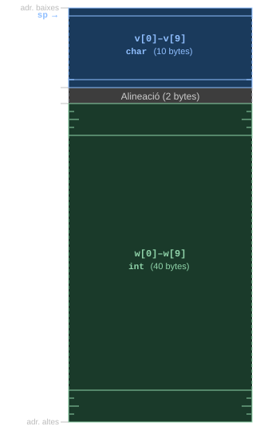
func: el vector v ocupa els bytes 0–9, l’alineació ocupa els bytes 10–11, i el vector w ocupa els bytes 12–51. El registre sp apunta al byte 0.
RV32I
func:
addi sp, sp, -52 # reserva espai: v(10) + alineació(2) + w(40)
...
# @w[i] = (sp+12) + i*4
slli t4, a0, 2 # i*4
add t4, t4, sp # sp + i*4
lw t4, 12(t4) # w[i]
add t4, t4, t0 # w[i] + k
# @v[w[i]+k] = sp + offset
add t5, sp, t4
lb a0, 0(t5) # retorna v[w[i]+k]
addi sp, sp, 52 # allibera espai
ret3.9.4 Subrutines multinivell: la pila del programa (els registres s0–s11)
En un programa multinivell, una subrutina pot cridar una altra subrutina, que al seu torn pot cridar una altra, i així successivament. En aquest cas, el bloc d’activació de cada subrutina s’apila sobre el de la subrutina que la va cridar.
La pila del programa és, doncs, una successió de blocs d’activació que creix i decreix a mesura que les subrutines es criden i retornen seguint la política de última en entrar, primera en sortir (last in, first out, LIFO), la qual s’implementa mitjançant el registre de pila sp.
A RARS, la regió de pila arriba fins a 0x7FFFFFFC, però l’entorn reserva l’espai per sobre d’aquesta adreça: fons de pila, és a dir, el valor inicial d’sp, és 0x7FFFEFFC.
Una subrutina multinivell ha de preservar, com a mínim, el valor de ra abans de la crida al callee i restaurar-lo després:
RV32I
3.9.4.1 Preservació del context
Els registres són compartits per totes les subrutines. Per tant, hi ha d’haver algun mecanisme per garantir que el valor d’un registre que s’usa després d’una crida a una subrutina filla no es perdi per sobreescriptura. Aquest és el problema de preservar el context.
L’ABI de RV32I resol aquest problema mitjançant una solució elegant i eficient, però que pot semblar contraintuïtiva a primera vista.
Aquesta solució es basa en la classificació dels registres en temporals (caller-saved en terminologia ABI) i segurs (callee-saved en terminologia ABI) i en el repartiment de responsabilitats entre caller i callee per preservar-los (RISC-V 3.18): Mentre que els registres temporals poden ser modificats lliurement per qualsevol subrutina i, per tant, preservar-ne el valor és responsabilitat del caller, els registres segurs han de ser restaurats al seu valor original per la subrutina que els modifica, abans de retornar i, per tant, la responsabilitat de preservar-los és del callee.
Que el pare hagi de prendre mesures per preservar el seu context sembla raonable, ja que és qui té la necessitat de recuperar-lo després de la crida. El que pot semblar contraintuïtiu és que el fill hagi d’ajudar al pare a preservar el context d’aquest últim preservant-ne els valors dels registres segurs, tot i no tenir-ne cap dependència. No obstant això, aquesta solució és molt eficient perquè permet a les subrutines modificar lliurement els registres temporals sense haver de preocupar-se per preservar-los, havent-se de preocupar només de preservar els registres segurs, assegurant, així, per economia, que només faran servir aquells registres que realment necessiten.
Dit de manera informal, el sistema no es basa en la idea que el pare s’hagi de protegir contra les modificacions del fill, sinó que es basa en el seu compromís de preservar els registres segurs del seu pare, és a dir, els de l’avi.
De RISC-V 2.22 (vegeu RISC-V 3.18):
| Categoria | Registres ABI | Qui els preserva |
|---|---|---|
| Temporals i arguments | t0–t6, a0–a7 |
Caller (la subrutina que fa la crida) |
| Adreça de retorn | ra |
Caller (la subrutina que fa la crida) |
| Segurs | s0–s11, sp |
Callee (la subrutina cridada) |
Resumint:
- Una subrutina, abans de retornar, ha de deixar els registres segurs (
s0–s11) en el mateix estat que tenien quan ha estat invocada. raés caller-saved (RISC-V 3.18), però una subrutina multinivell l’ha de desar abans de fer una crida i restaurar-lo abans de retornar.
3.9.4.2 Determinació dels registres segurs necessaris
Per determinar quins registres cal fer segurs, cal analitzar el codi i identificar les dades que compleixen les dues condicions simultàniament:
- El seu valor ha estat generat per última vegada ABANS d’una crida.
- El seu valor s’usa DESPRÉS d’aquesta mateixa crida.
A cada una d’aquestes dades se li assigna un registre segur (s0–s11), de manera que la subrutina filla els preservarà automàticament.
3.9.4.3 Estructura general d’una subrutina multinivell
La secció de codi d’una subrutina multinivell es divideix en tres parts:
- Pròleg: és el codi que s’executa a l’inici de la subrutina per generar el bloc d’activació.
- Cos: és el codi que implementa la funcionalitat de la subrutina.
- Epíleg: és el codi que s’executa al final de la subrutina, just abans de retornar el control de flux al caller, per restituir el context.
RV32I
sub:
# pròleg
addi sp, sp, -BA_MIDA # reserva d'espai per al BA
sw s0, 0(sp) # desa registres segurs caller
sw s1, 4(sp)
... # tants com sigui necessari (màxim 12)
sw ra, BA_MIDA-4(sp) # desa ra (si és multinivell)
# cos
...
# epíleg
lw s0, 0(sp) # restauració de registres segurs
lw s1, 4(sp)
... # tants com sigui necessari (màxim 12)
lw ra, BA_MIDA-4(sp) # restauració ra (si és multinivell)
addi sp, sp, BA_MIDA # alliberació d'espai del BA
ret3.9.4.4 Exemples
Pas 1. Registres segurs. Identificació de les dades que es fan servir DESPRÉS de la crida a mcm i el valor de les quals ha estat generat per ÚLTIMA vegada ABANS d’aquesta crida: són c (paràmetre) i d (assignat a a+b). S’assignen els registres segurs s0 i s1, respectivament. La variable e s’assigna al registre temporal t0 ja que s’escriu DESPRÉS de la crida.
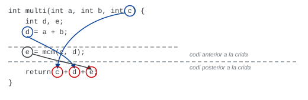
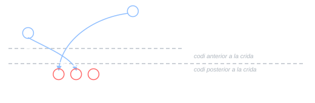
multi. La línia de punts separa el codi anterior i posterior a la crida a mcm. Les fletxes indiquen les dades c i d que travessen la frontera i que s’han de guardar en registres segurs.
Pas 2. Bloc d’activació. No hi ha variables locals a la pila (totes són escalars). Cal desar s0, s1 i ra: 3 words = 12 bytes.
Offset des de sp |
Contingut |
|---|---|
+0 |
s0 desat |
+4 |
s1 desat |
+8 |
ra desat |
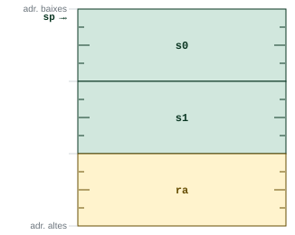
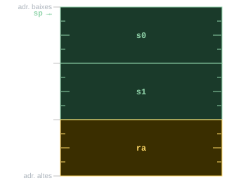
multi: 12 bytes amb s0, s1 i ra desats als offsets +0, +4 i +8 respectivament.
Pas 3. Codi assemblador.
RV32I
multi:
# pròleg
addi sp, sp, -12
sw s0, 0(sp) # desa s0
sw s1, 4(sp) # desa s1
sw ra, 8(sp) # desa ra
mv s0, a2 # copia c a s0
# d = a + b → s1
add s1, a0, a1
# e = mcm(c, d)
mv a0, s0 # passa c
mv a1, s1 # passa d
jal ra, mcm
mv t0, a0 # e = resultat de mcm
# return c + d + e
add t1, s0, s1 # c + d
add a0, t1, t0 # c + d + e → a0
# epíleg
lw s0, 0(sp)
lw s1, 4(sp)
lw ra, 8(sp)
addi sp, sp, 12
retC
Pas 1. Registres segurs. Desglossant les dues crides:
res_f = f(d, &q);
res_g = g(v, w);
e = res_f + res_g;Les dades que travessen fronteres de crides (escrites ABANS, usades DESPRÉS) són: c, d i res_f. S’assignen a s0, s1 i s2 respectivament. La variable e s’assigna a t0. Els paràmetres a i b resten a a0 i a1.
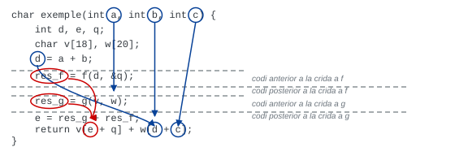
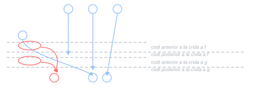
exemple. Les línies de punts separen el codi anterior i posterior a cada crida. Les fletxes indiquen les dades c, d i res_f que travessen fronteres de crides i s’han de guardar en registres segurs s0, s1 i s2 respectivament.
Anotació de registres sobre el codi:
char exemple(int a, int b, int c) { /* a → a0, b → a1, c → s0 */
int d, e, q; /* d → s1, e → t0, q → pila */
char v[18], w[20]; /* v → pila, w → pila */
...
res_f = f(d, &q); /* f(d, &q) → s2 */
res_g = g(v, w); /* g(v, w) → a0 (temporal) */
e = res_f + res_g; /* e = s2 + a0 */
...
}Pas 2. Bloc d’activació. Variables a la pila en ordre textual: q (4 bytes), v (18 bytes), w (20 bytes). Total variables: 42 bytes. Alineació fins a múltiple de 4: 2 bytes. Registres desats: s0, s1, s2, ra = 16 bytes. Total: 60 bytes.
Offset des de sp |
Contingut | Mida |
|---|---|---|
+0 |
q |
4 bytes |
+4 |
v[0]–v[17] |
18 bytes |
+22 |
w[0]–w[19] |
20 bytes |
+42–+43 |
alineació | 2 bytes |
+44 |
s0 desat |
4 bytes |
+48 |
s1 desat |
4 bytes |
+52 |
s2 desat |
4 bytes |
+56 |
ra desat |
4 bytes |
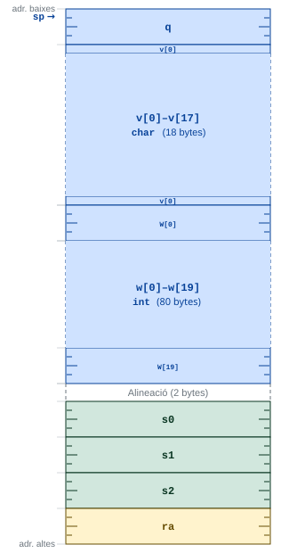
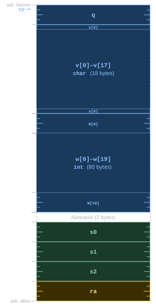
exemple: variables locals q, v i w als offsets +0, +4 i +22, alineació als bytes +42–+43, i registres desats s0, s1, s2, ra als offsets +44, +48, +52 i +56.
Pas 3. Codi assemblador.
RV32I
exemple:
# pròleg
addi sp, sp, -60
sw s0, 44(sp)
sw s1, 48(sp)
sw s2, 52(sp)
sw ra, 56(sp)
mv s0, a2 # copia c a s0
# d = a + b → s1
add s1, a0, a1
# crida a f(d, &q)
mv a0, s1 # passa d
mv a1, sp # passa &q (sp+0)
jal ra, f
mv s2, a0 # res_f → s2
# crida a g(v, w)
addi a0, sp, 4 # passa @v[0]
addi a1, sp, 22 # passa @w[0]
jal ra, g
add t0, s2, a0 # e = res_f + res_g → t0
# return v[e+q] + w[d+c]
lw t1, 0(sp) # q
add t1, t0, t1 # e + q
add t1, t1, sp # sp + (e+q)
lb t2, 4(t1) # v[e+q]
add t1, s1, s0 # d + c
add t1, t1, sp # sp + (d+c)
lb t3, 22(t1) # w[d+c]
add a0, t2, t3 # resultat → a0
# epíleg
lw s0, 44(sp)
lw s1, 48(sp)
lw s2, 52(sp)
lw ra, 56(sp)
addi sp, sp, 60
ret3.10 Compilació, assemblatge, enllaçat i càrrega
Compiler Explorer (godbolt.org) permet introduir codi C directament al navegador i veure en temps real el codi assemblador generat per GCC, Clang i altres compiladors per a múltiples ISA, inclòs RISC-V (RV32 i RV64). És una eina útil per explorar l’efecte de les optimitzacions del compilador, comparar traduccions entre arquitectures i observar l’ús de pseudoinstruccions al codi generat.
En general, el procés pel qual un programa escrit en C es converteix en un programa executable consta de quatre passos:
- compilació
- assemblatge
- enllaçat
- càrrega
A la Secció 1.2.6 hi ha una introducció a aquest procés. En aquesta secció s’analitza amb més detall, posant èmfasi en com cada pas gestiona les etiquetes i les adreces del programa.
3.10.1 Compilació separada
En C, un mòdul (també anomenat unitat de traducció) és una unitat funcional de programació composta, generalment, per un o més fitxers de codi font (.c) i un fitxer de capçalera (.h), el qual conté les declaracions de les funcions i les dades que el mòdul vol fer accessibles a altres mòduls (tècnicament, la interfície). La directiva de pre-processament #include fa la inclusió textual dels fitxers de capçalera dins de la unitat de traducció, facilitant la propagació de declaracions de tipus, prototips de funcions i macros necessàries per a la resolució de símbols.
Hi ha moltes situacions on resulta convenient separar el codi i les dades en mòduls. Algunes d’aquestes situacions són:
- Fer possible reutilitzar codi (biblioteques de funcions).
- Estructurar racionalment projectes complexos.
- Permetre que equips independents de programadors treballin en paral·lel.
- Fer que només s’hagin de recompilar els mòduls modificats.
Els mòduls es compilen i assemblen per separat, generant fitxers objecte independents que més tard s’enllaçaran per crear l’executable.
De vegades, per abús de llenguatge, es diu «compilar» a tot el procés de traducció de codi font a executable, incloent-hi l’assemblatge i l’enllaçat. Cal, però, tenir present que, en realitat, cada un d’aquests passos és una fase diferent del procés de traducció, amb funcions i sortides diferents.
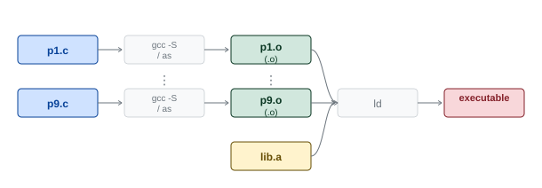
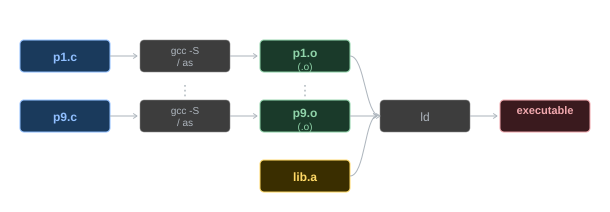
.o), que l’enllaçador (ld) combina amb les biblioteques per produir l’executable.
3.10.2 Compilació
El compilador pren com a entrada el codi font en C i el tradueix a llenguatge assemblador (fitxer .s). Durant aquest procés aplica les regles de l’ABI per decidir quins registres usar per a cada variable, i genera les instruccions de la ISA de destí.
El compilador no assigna adreces absolutes ni a les dades ni al codi, sinó que fa servir etiquetes. Aquestes etiquetes són resoltes a adreces absolutes més tard. Durant l’assemblatge es resolen totes les que fan referència al mòdul mateix, i les que no es poden resoldre (perquè referencien dades o codi d’altres mòduls) es deixen amb adreces provisionals que l’enllaçador corregirà quan combini tots els mòduls. D’aquesta manera, el compilador pot generar codi per a cada mòdul de manera independent, sense necessitat de conèixer els detalls dels altres mòduls amb els que s’enllaçarà.
3.10.3 Assemblatge
L’assemblador pren com a entrada el fitxer .s i el tradueix a codi màquina en un fitxer objecte (.o). Durant l’assemblatge es produeixen tres tasques fonamentals:
3.10.3.1 Expansió de macros i pseudoinstruccions
L’assemblador expandeix les macros i pseudoinstruccions en les seqüències d’instruccions reals equivalents. Per exemple, li t0, 0x0030D900 s’expandeix en lui + addi, i ret s’expandeix en jalr zero, ra, 0.
3.10.3.2 Construcció de la taula de símbols
El llenguatge assemblador usa etiquetes per referir-se a adreces, tant al codi com a les dades. Una etiqueta pot ser usada dins el fitxer fins i tot abans de ser definida (referència anticipada). Per gestionar-ho, l’assemblador fa dues passades sobre el fitxer:
- Primera passada: llegeix tot el codi font i construeix una taula de símbols que associa cada etiqueta amb la seva posició (offset en bytes respecte a l’inici de la secció on està definida).
- Segona passada: codifica les instruccions, usant la taula de símbols per resoldre les etiquetes.
Cal notar que les adreces que assigna l’assemblador no són les adreces definitives en memòria, ja que l’assemblador no coneix el codi i les dades definits en altres mòduls. Les adreces definitives les assignarà l’enllaçador.
3.10.3.3 Reubicació i referències externes
Algunes instruccions necessiten l’adreça absoluta d’una etiqueta per ser codificades completament:
- Els salts relatius al PC (
beq,bne,blt,jal, etc.) codifiquen un offset relatiu al PC, que no depèn de l’adreça absoluta del codi. L’assemblador pot codificar-los completament si l’etiqueta de destinació és al mateix mòdul. - La pseudoinstrucció
la(auipc+addi) i els salts indirectes (jalr) que depenen d’una adreça externa necessiten una adreça absoluta que l’assemblador no coneix en temps d’assemblatge. L’assemblador hi escriu un valor provisional i anota la instrucció a la llista de reubicació perquè l’enllaçador la corregeixi.
L’assemblador genera per a cada fitxer objecte:
- Una llista de reubicació: posició de cada instrucció que conté una adreça provisional que caldrà corregir, el seu tipus, i l’offset provisional.
- Una taula de símbols globals: etiquetes declarades amb
.globli les seves adreces provisionals, visibles des d’altres mòduls. - Una llista de referències externes no resoltes: instruccions que fan referència a etiquetes definides en altres mòduls.
.globl (i .global)
Si una etiqueta ha de ser referenciada des d’un altre mòdul, cal declarar-la amb la directiva .globl, altrament només és visible localment dins el seu mòdul.
GCC accepta la directiva .global com a sinònim de .globl, però aquesta última és la forma estàndard i més habitual.
El fitxer objecte generat per l’assemblador conté els components següents:
| Component | Contingut |
|---|---|
| Capçalera | Mida i posició dels restants components |
Secció .text |
Codi màquina de les subrutines del mòdul |
Secció .data |
Dades estàtiques definides al mòdul |
| Llista de reubicació | Posició, tipus i adreça provisional de cada instrucció a reubicar |
| Taula de símbols globals | Etiquetes globals i les seves adreces provisionals |
| Llista de referències externes | Instruccions que referencien etiquetes d’altres mòduls |
| Informació de depuració | Correspondència entre instruccions i línies del codi font |
Considerant dos mòduls A i B:
Programa A
Els fitxers objecte contindran:
Mòdul A:
- Reubicació: posició
+36(text), tipusla, offset+4(data) - Símbols globals:
Xa offset+0(data) - Referències externes: posició
+60(text), tipusjal, etiquetag
Mòdul B:
- Símbols globals:
ga offset+16(text) - Referències externes: posició
+36(text), tipusla, etiquetaX
3.10.4 Enllaçat
L’enllaçador (linker) combina múltiples fitxers objecte i fitxers de biblioteca en un sol fitxer executable. Ho fa en quatre passos:
1. Resolució de símbols. L’enllaçador reuneix totes les taules de símbols globals i llistes de referències externes. S’assegura que cada referència externa té una definició, cercant-la primer als fitxers objecte i després als fitxers de biblioteca. Si no troba alguna definició, finalitza amb un error unresolved reference to symbol X.
2. Combinació de seccions. Les seccions .text i .data de tots els mòduls es concatenen. Les seccions dels mòduls que no són el primer queden desplaçades. L’enllaçador calcula i anota el desplaçament sofert per les seccions de cada mòdul.
3. Reubicació d’adreces internes. Es corregeixen les instruccions de les llistes de reubicació. L’adreça definitiva s’obté sumant l’adreça absoluta inicial de la secció (0x00400000 per a .text i 0x10010000 per a .data en RARS) amb el desplaçament sofert pel mòdul i l’offset provisional que l’assemblador hi havia codificat.
4. Resolució d’adreces externes. Es corregeixen les instruccions amb referències externes. L’adreça definitiva s’obté de manera anàloga, usant l’adreça del símbol global tal com consta a la taula de símbols.
Finalment, s’escriu al disc el fitxer executable, que té una estructura similar a un fitxer objecte però sense informació de reubicació ni referències externes no resoltes.
Enllaçant els mòduls A i B de l’exemple anterior, el programa definitiu queda:
Inici codi: 0x00400000
Inici dades: 0x10010000
.text:
codi A (offset +0 .. +79) → adreces 0x00400000..0x0040004F
codi B (offset +80 .. +139) → adreces 0x00400050..0x0040008B
.data:
X: .word -1 → adreça 0x10010000 (+0)
Y: .word -2 → adreça 0x10010004 (+4)
Z: .word -3 → adreça 0x10010008 (+8, desplaçat 8 bytes)
Reubicacions resoltes:
@Y = 0x10010000 + 4 = 0x10010004
@g = 0x00400000 + 80 + 16 = 0x00400060
@X = 0x10010000 + 0 = 0x100100003.10.5 Càrrega en memòria
El carregador (loader) és un programa del sistema operatiu que llegeix el fitxer executable i el copia a la memòria principal per ser executat. En el cas de UNIX/Linux segueix els passos següents:
- Llegeix la capçalera del fitxer executable per determinar la mida de les seccions de codi i dades, i reserva memòria principal suficient.
- Copia les instruccions i les dades del fitxer executable a la memòria.
- Copia a la pila els paràmetres del programa principal expressats a la línia de comandes (si n’hi ha).
- Inicialitza els registres del processador, deixant
spapuntant al cim de la pila. - Salta a una rutina de startup dins l’executable, la qual copia els paràmetres
argciargvde la pila als registresa0ia1i fa una crida amain.
Quan la funció main retorna, la rutina de startup invoca la crida al sistema exit, que allibera tots els recursos assignats al programa (memòria, fitxers oberts, etc.).
3.10.6 GCC/Clang — El flux de generació complet
El flux de generació d’un executable es pot desglossar en les etapes següents. A EC fem servir el compilador creuat (cross-compiler) (riscv32-unknown-elf-gcc, en el cas de GCC), que s’executa al host (x86) però genera codi per al target (RV32I), com s’ha explicat a la Secció 1.2.4.
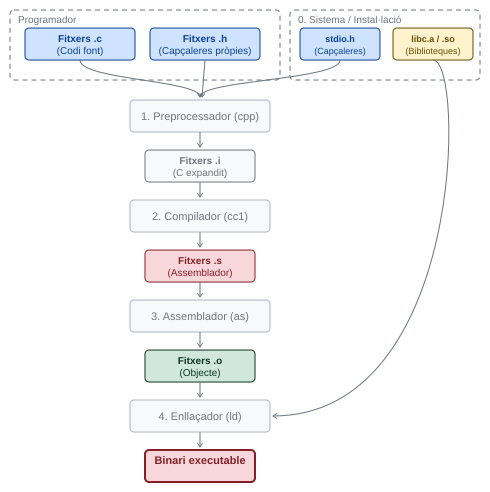
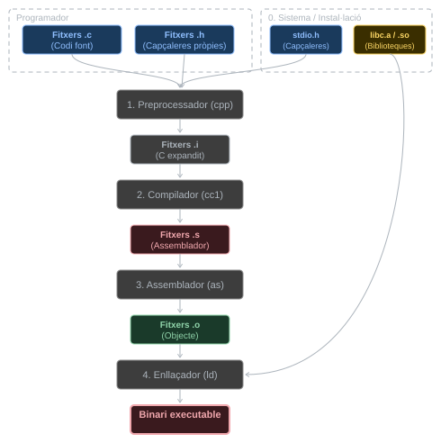
0. Sistema / Instal·lació: capçaleres del sistema (stdio.h, etc.) i biblioteques (libc.a, .so) disponibles al sistema de compilació.
1. Preprocessador (cpp) [agnòstic a ABI i ISA]:
- Expandeix macros i símbols (vegeu Secció 3.10).
- Substitueix el contingut dels fitxers de capçalera en la posició de les directives
#include. - Processa les directives de compilació condicional (
#ifdef,#ifndef,#if). - Suprimeix tots els comentaris.
- Resultat: un fitxer
.iper cada fitxer.c.
2. Compilador (cc1) [ABI + ISA]:
- Tradueix la lògica de C a assemblador RV32I.
- Aplica les regles de l’ABI per decidir quins registres usar per a cada variable.
- Genera la combinació d’instruccions més eficient per al repertori RV32I.
- Resultat: un fitxer
.sper cada fitxer.i.
3. Assemblador (as) [ISA]:
- Expandeix pseudoinstruccions.
- Construeix la taula de símbols (dues passades).
- Genera el codi màquina amb adreces provisionals on calgui.
- Resultat: un fitxer
.oper cada fitxer.s, amb llistes de reubicació i símbols globals.
4. Enllaçador (ld) [ISA + ABI]:
- Resol símbols globals i referències externes.
- Combina les seccions de tots els mòduls.
- Corregeix les adreces provisionals (reubicació).
- Resultat: el binari executable, llest per ser carregat pel sistema operatiu o el simulador.
La resta de bits de l’immediat de 12 bits s’ignoren.↩︎